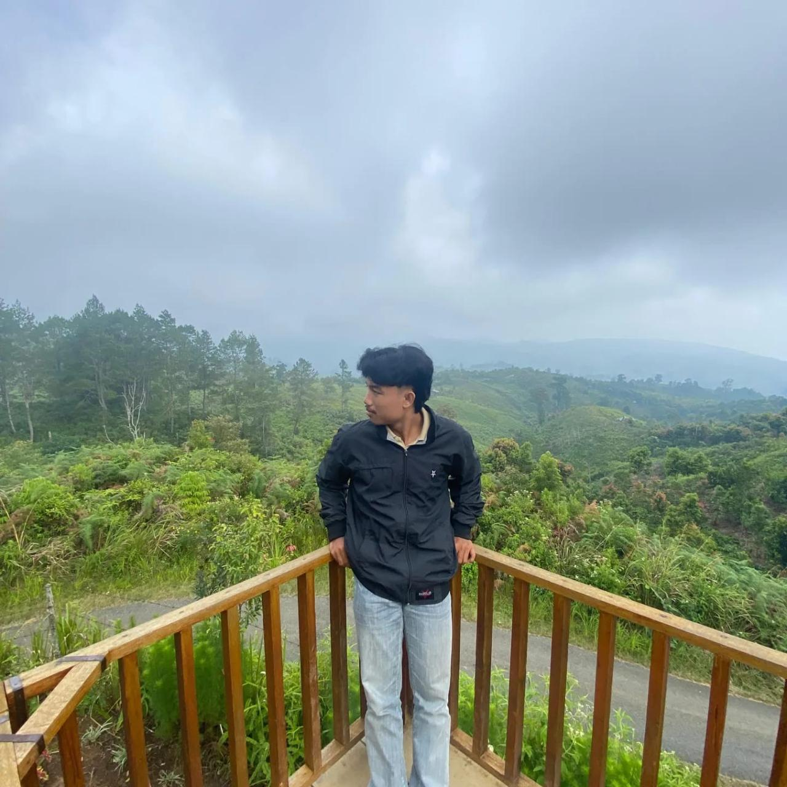

Fams Bakery adalah usaha brownies premium homemade yang lahir pada tahun 2023. Usaha ini dibangun dan dikelola langsung oleh Muhammad Addifa Dinullah dengan satu tujuan sederhana: menghadirkan brownies fresh yang mudah dipesan dan dapat menemani berbagai momen spesial.
Berawal dari Dapur Rumahan
Perjalanan Fams Bakery dimulai dari ruang yang sederhana di Sungai Duren, Jambi. Dengan peralatan yang masih terbatas dan proses produksi yang dikerjakan secara mandiri, setiap pesanan menjadi kesempatan untuk belajar tentang rasa, tekstur, topping, kemasan, dan pelayanan pelanggan.
Sejak awal, Fams Bakery dekat dengan kebutuhan mahasiswa Mendalo. Brownies hadir sebagai hadiah sempro, wisuda, ulang tahun, hingga teman berkumpul. Seiring waktu, pelanggan juga datang dari keluarga, komunitas, dan masyarakat umum di area Mendalo.
Struggle di Balik Pertumbuhan
Membangun usaha rumahan berarti belajar menjalankan banyak peran sekaligus. Mulai dari memilih bahan, memproduksi brownies, membuat konten, menerima pesanan, hingga memastikan produk sampai dengan baik ke tangan pelanggan.
Tantangan terbesar bukan hanya membuat produk yang enak, tetapi menjaga kualitas agar tetap konsisten. Setiap masukan pelanggan digunakan untuk memperbaiki resep, tampilan produk, dan pengalaman pemesanan.
Nilai yang Tetap Dipertahankan
- Fresh homemade. Produk dibuat dekat dengan waktu pemesanan untuk menjaga rasa dan tekstur.
- Dekat dengan pelanggan. Kebutuhan topping, tulisan, dan momen acara dapat dikonsultasikan.
- Terus berkembang. Setiap produk dan layanan dievaluasi dari pengalaman nyata pelanggan.
- Untuk berbagai momen. Fams Bakery hadir untuk mahasiswa, keluarga, komunitas, dan masyarakat Mendalo.
Langkah Berikutnya
Ke depan, Fams Bakery ingin terus memperluas pilihan produk tanpa kehilangan karakter homemade-nya. Perjalanan ini masih panjang, tetapi semangatnya tetap sama: membuat brownies premium yang dapat menjadi bagian dari cerita dan momen penting pelanggan.
Konsultasikan kebutuhan brownies langsung melalui WhatsApp.